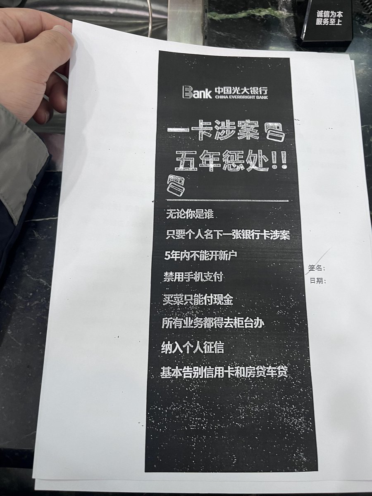

在国内银行开户，难免被当成诈骗犯，不仅要签一堆反诈条款，还要住址的外卖或网购记录拍下来打印。真不小心收到赃款了，那就涉案卡销了，其他户的非柜就自动解了。至于被银行关户，反诈中心说不是他们的事情，拒绝准入高风险客户是银行自己的事（摆烂
接着又问职业，告诉后，过了会儿，对方又假装以好奇的口吻问：那你们是不是要每日写稿，接着夸我们文笔一定很好，我知道她是在试探我，看我是不是真是干这行的。
办到最后，柜员说新开户每日转出限额5k，使用半年后再调整。快离开前，柜员例行给我推销信用卡，我连忙摆手拒绝，心疼自己的征信查询次数😭
当然，我不是针对银行工作人员，也请见谅！毕竟旁边有个大学生来激活社保卡的金融账户吵起来了，直接限额一天500，问就是上面规定。也不知道是哪个不食人间烟火大聪明发明出来，让他来试试 ，是不是吃喝不付钱。那几百块估计连个房租都不够交的，一定是自己不够努力！
接着又问职业，告诉后，过了会儿，对方又假装以好奇的口吻问：那你们是不是要每日写稿，接着夸我们文笔一定很好，我知道她是在试探我，看我是不是真是干这行的。
办到最后，柜员说新开户每日转出限额5k，使用半年后再调整。快离开前，柜员例行给我推销信用卡，我连忙摆手拒绝，心疼自己的征信查询次数😭
当然，我不是针对银行工作人员，也请见谅！毕竟旁边有个大学生来激活社保卡的金融账户吵起来了，直接限额一天500，问就是上面规定。也不知道是哪个不食人间烟火大聪明发明出来，让他来试试 ，是不是吃喝不付钱。那几百块估计连个房租都不够交的，一定是自己不够努力！
